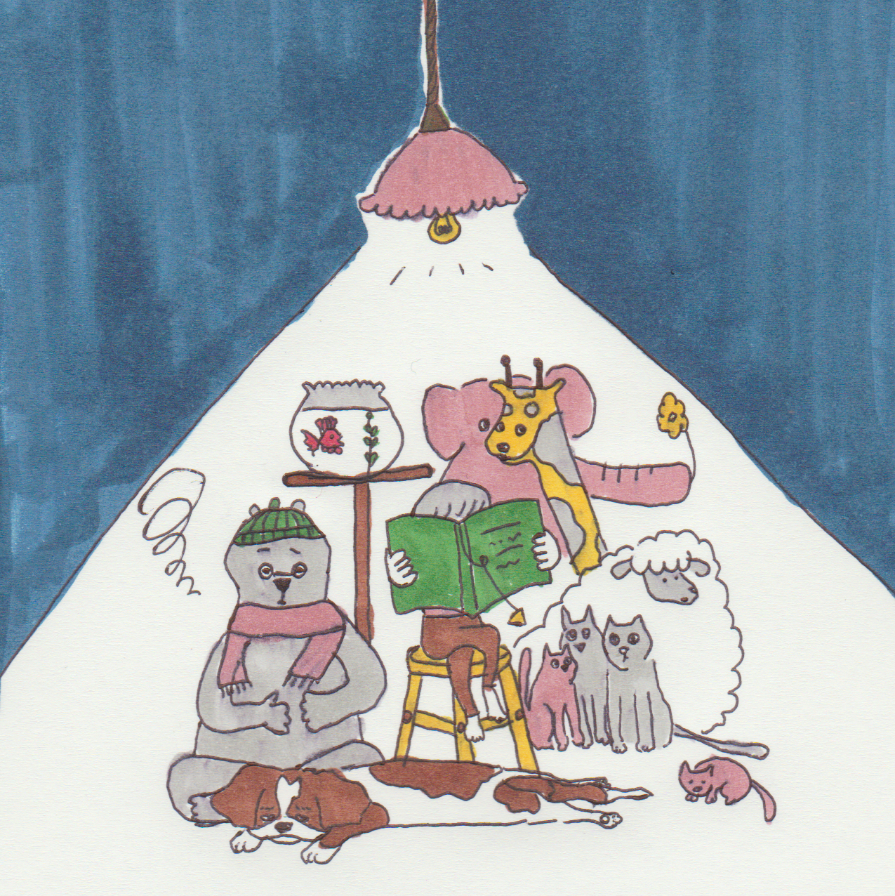

タップで閉じる

タップで閉じる

タップで閉じる

タップで閉じる
こんにちは。イラストレーターの樹です。動物を中心に、ラクガキのような少しハッシュな絵を好み、描いています。自分の名前が「樹」ということもあり、木などの植物を描くのも好きです。でもやはり、生きているものを描いている方が自分らしい作品になります。
大体、私が使用するカラーは決まっています。というのは、持っているペンの本数が少ないからです。紺、深緑、褪紅色、灰色。。。「ああ、もっと薄い青があったらな」って思うときももちろんあったりします。でもなぜか、買い足そうとはどうしても思いません。たぶん、少ないペンの中から工夫して絵をつくり上げていくのが楽しいからです。
こんな私の作品が、誰かの目に留まり、少しでも暖かい何かを送ることができたらなと心から思っています。どうぞよろしくお願いします。
タップで閉じる
タップで閉じる
タップで閉じる
タップで閉じる
ドキュメンタリー映画のグッズである、トートバッグをデザインを担当させていただきました。
昔は炭鉱所として使われていた廃墟と、それを取り囲む自然をモチーフとしました。
沖縄県の小さな島で幼いころから暮らしている台湾出身のおばあちゃんの生活に密着したドキュメンタリー。
一人の女性の人生の一部を切り取った、孤独と人生について考えられる一作です。
興味のある方は、是非ご覧になってください。
最近は昔に比べて年賀状を書く機会が減ってしまいました。
私が幼いころは、冬休みに入ると宿題を放り出して何枚も手描きで仕上げていました。
でも、この頃はもらう機会も、送る機会も少なくなってなんだか寂しい気持ちです。
そこで、今年は代わりにといっては何ですが、カレンダーをつくったのです。
初めてだったけど、なかなか素敵な出来。
上手に描けたので、グッズにしました。
是非、SUZURIのサイトにアクセスしてみてください。